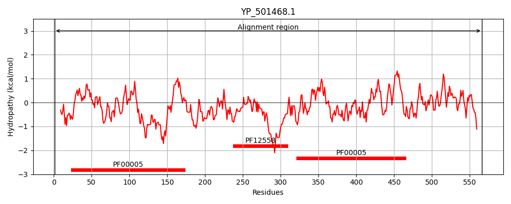
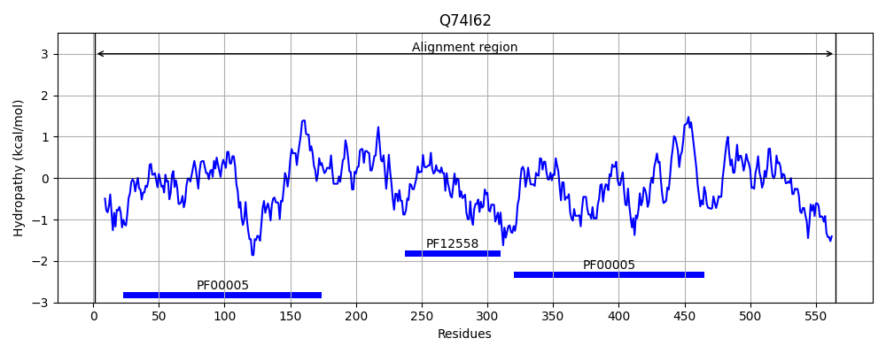
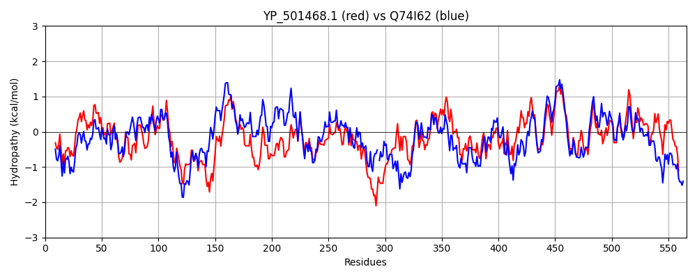

Hit Accession: Q74I62
Hit TCID: 3.A.1.29.1
Hit Description: gnl|BL_ORD_ID|15314 gnl|TC-DB|Q74I62|3.A.1.29.1 Putative ABC transporter ATP-binding protein LJ_1704 OS=Lactobacillus johnsonii GN=LJ_1704 PE=3 SV=1
Mach Len: 566
e:0.000000
Query TMS Count : 0
Hit TMS Count: 0
TMS-Overlap Score: 0.000000
Predicted Substrates:None
BLAST Alignment:
Score: 1476 , Bit scores: 573 bits, E-value: 0.0e+00, Alignment length: 566, Percentage identity: 50
Query: 1 MTEPIISFKDFSFQYHSQATPTLQNINVDIYPGEKVLVVGASGSGKSTFANCINGLIPFKTKGNITGELYINNQDATVSCLHDRSNVVGTVLQDTDGQFIGLTAAEDMAFLLENNCVEQDDMKKNVSYWAEKVGMIEHLNHRPQDLSGGQKQRVSLGGILIHRTPILILDEPLANLDPATGHETLRLLNNIHEETKSTMIIVEHRLEESLDDTFDRVLLFKDGKIIANTTPSDLLKSSKLKEAGIREPLYCTALKYAEVDVESIDNLANLRDVCMSEHVKFKVKKWIDETSANNDNKYKSEPLLELNEVCVQYSDYSNSVLNNVQLNVYRKEMLSIVGHNGAGKSTLAKAICGFLDITGNIQFCNRGFNQLSISERSEFVGYVMQNPNHMISEKMIYDEVALGLRARGMKESDIKIRVENVLKICGLYAFRNWPIAALSYGQKKRVTIASVLVLNPEIIILDEPTAGQDFYHYNEIMSFLIELNRQGKTIIMITHDMHLLSEYSSRTVVLSKGQVVADTTPVLVLNDKKICEIASLRQTSLFEMAEYIGISEPQKLVQLFINHDRK 566
MTEPII FKDFSF+Y+SQA PTL+NIN+ I GEK+L+ G SGSGKST C+NGLIP +G + G+ +N +D T + L D S T+LQD D QFIGLT ED+AF LEN+C +D M + V+ WA ++ + E L PQ LSGGQKQ V+L G+L+ +PIL+ DEPLANLDPA+G +T+ +++ I +E +T+II+EHR+EE L DR++L +G I+A+ + LL S+ L++ G+REPLY AL A+V++ SI + + + +SE + K+ W + + + PLL+L+ V QYS L +V + + + +SIVG NGAGK+TL + ICGF+ G I ++ + LSI ER+E +GYVMQ+PN MIS+KMI+DE+ALGLR R + E IK +V+ LKICGLY FR+WPI+ALS+GQKKRVTIA++LVL PEIIILDEPTAGQD+ Y EIMSFL LN GKTII+ITHDMHL+ EY+SR++ +KG+++ADTTP+ +L ++ + + ASL++TSL+++A++ + +P K VQ +IN +++
Sbjct: 1 MTEPIIEFKDFSFKYNSQAEPTLKNINLKINKGEKILLAGPSGSGKSTIGRCLNGLIPNIDQGEVKGKCLVNGKDITSTSLFDFSFTTSTILQDADSQFIGLTVGEDIAFALENDCQPKDKMHQTVNQWANELKIKELLTQSPQSLSGGQKQIVALAGVLVDESPILLFDEPLANLDPASGLKTMAIIDKIQKELNATVIIIEHRVEEVLSQLIDRIILVNEGTIVADQPTNQLLHSNTLEKIGVREPLYLKALTAADVNLSSIKEVDQISTLPVSEKISDKLAAWTKQAKITK-KEVDNLPLLKLDHVGHQYSKNQPYPLKDVSTTINQGDFISIVGQNGAGKTTLCRTICGFISNEGKITLKDQNLSDLSIKERAEKIGYVMQDPNQMISQKMIFDEIALGLRLRNVDEETIKQKVDQTLKICGLYPFRHWPISALSFGQKKRVTIAAILVLEPEIIILDEPTAGQDWKTYTEIMSFLKHLNTMGKTIIIITHDMHLMLEYTSRSLAFAKGKLIADTTPIELLTNQALIKEASLKRTSLYDLAKHYNLPDPNKFVQAYINFEQQ 565 | Protein Hydropathy Plots: |
|---|
|  |  |
Pairwise Alignment-Hydropathy Plot:
|
|---|
|  |